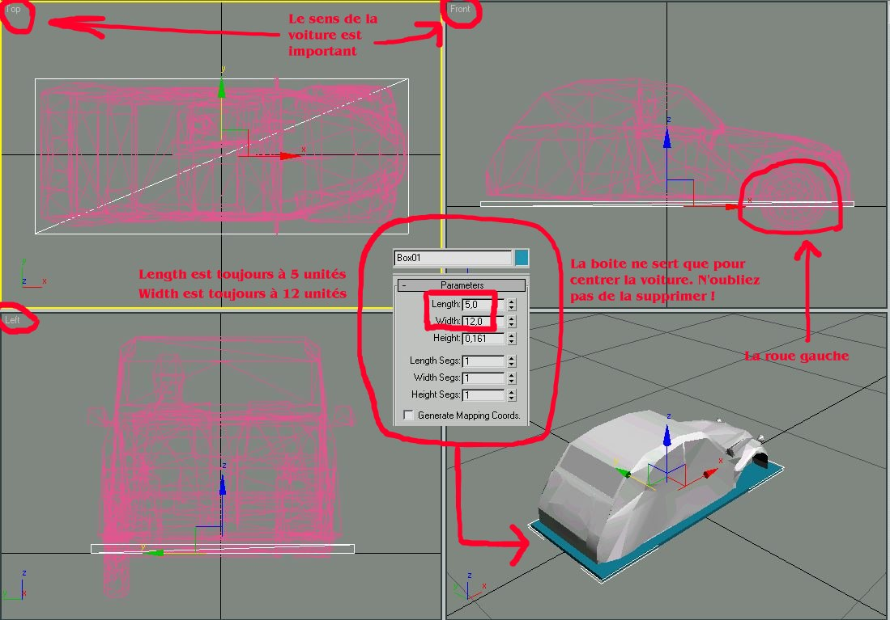
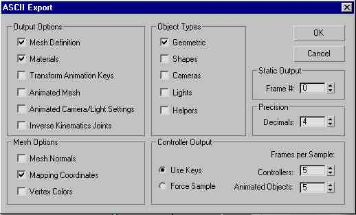

- Ecstasy
- SpeedWay
- SimTaDyn
- Interpréteur Forth


Table des matières:
 Présentation.
Présentation.- Aperçus du jeu.
- Téléchargement.
- Au coeur d'Ecstasy.
- Pour les développeurs.
- Liens utiles pour la programmation OpenGL.
Projets similaires :
Les documents (PDF, codes sources, programmes, ...) fournis sur ce site sont mis à disposition sous licences
 |  | |
|
|
| |
Page auto-générée le :
Le projet Ecstasy
 Présentation
Présentation
Ecstasy est un jeu ayant pour but de piloter une voiture dans une ville de type américaine à travers son trafic routier. La dynamique voiture du joueur est modélisée. Ecstasy est un projet d'étudiant fait à l'école EPITA en 2002-2003. Il a été réalisé en OpenGL et Borland Delphi 5 et DirectSound et fonctionne uniquement pour Windows 95/98/2000/XP. En 2017, j'ai apporté quelques modifications pour le rendre un peu plus beau et jouable mais je n'ai pas le temps de totalement le finir. Néanmoins, il semble fonctionner et compiler sur des versions plus récentes de Windows et de Delphi (que je ne possède pas, désolé).
Le scénario est très simple : vous conduisez une voiture dans une ville. Ce jeu n'a évidemment pas la prétention d'être aussi amusant qu'un jeu commercial comme Midtown Madness ou GTA. Pour jouer, vous devez connaître les touches suivantes :
- HAUT/BAS : accélère ou freine la voiture.
- GAUCHE/DROITE/souris : tourne le volant.
- 4, 6, 2, 8 : change la position ou l'angle de la caméra.
- F1 : change de mode de caméra (vue intérieure,extérieure).
- TABULATION : change le levier de vitesse: conduite ou recule.
 Aperçus du jeu
Aperçus du jeu
{kind=link}
{kind=link}
{kind=link}
 Téléchargement
Téléchargement
Ce projet n'est plus développé (sauf une fois en 2017) mais le code
source est disponible sur GitHub  en open source. Il vous
faudra un Delphi Borland (de préférence version 5) pour compiler les
sources. Ce projet n'a pas été conçu pour fonctionner pour Linux, Mac
OS X car Window XP 32-bits était imposé par nos
professeurs.
en open source. Il vous
faudra un Delphi Borland (de préférence version 5) pour compiler les
sources. Ce projet n'a pas été conçu pour fonctionner pour Linux, Mac
OS X car Window XP 32-bits était imposé par nos
professeurs.
| Ecstasy version 2002 | Version légère version 2002 | Les sources version 2002 |
| 9 Mo --- format RAR | 3.4 Mo --- format RAR | 1.7 Mo --- format RAR |
| Ecstasy Windows XP 32-bits version 2017 | Les sources version 2017 | Le rapport |
| 6 Mo --- format RAR | 1.5 Mo --- format RAR | 500 Ko --- format PDF |
Remarques:
- Programmeurs novices à l'époque, nous n'avons omis de mettre un cadenceur pour la boucle d'itération du jeu (en général 30 ou 60 FPS, à savoir images par secondes). Donc, selon la puissance de votre PC, le jeu peut être extrêmement rapide, le rendant injouable.
- Dans la version de 2017, les immeubles ainsi que le terrain suivent mieux l'altitude de la route, les trottoirs ont été ajoutés (la voiture du joueur ne passe plus à travers). Le roulis a été rajouté à la voiture du joueur ainsi que des correctifs de programmation dans la dynamique.
- La version de 2002 contient un setup qui permet d'installer et de supprimer correctement le jeu pour Windows XP (il y aura aucun risque de plantage pour votre Windows car l'installation consiste simplement à copier l'exécutable à l'endroit désiré par l'utilisateur et rien de plus). Dans la version de 2017, il n'y aura pas de setup (vu que j'ai perdu cet outil).
 Au coeur d'Ecstasy
Au coeur d'Ecstasy
Les modèles 3D des voitures sont l'oeuvre de fans du jeu
Midtown
Madness II  . Elles proviennent de nombreux sites web consacrés et
étaient téléchargeables gratuitement. J'ai depuis perdu la liste des
sites ainsi que le nom des auteurs (pour cela si un auteur reconnait
son oeuvre et ne souhaite pas la voir dans ce jeu, qu'il me fasse
signe et je les retirerai aussitôt du programme). Les voitures ont
été converties au format 3D Studio Max, simplifiées et enfin
exportées au format ASE.
. Elles proviennent de nombreux sites web consacrés et
étaient téléchargeables gratuitement. J'ai depuis perdu la liste des
sites ainsi que le nom des auteurs (pour cela si un auteur reconnait
son oeuvre et ne souhaite pas la voir dans ce jeu, qu'il me fasse
signe et je les retirerai aussitôt du programme). Les voitures ont
été converties au format 3D Studio Max, simplifiées et enfin
exportées au format ASE.
Le paragraphe suivant n'est pas écrit dans le README de mon repo GitHub.
Si un joueur veut définir lui-même sa propre voiture dans 3D Studio Max. Il peut facilement l'importer dans Ecstasy de la façon suivante :
- Créer un nouveau dossier avec le nom de la voiture dans le dossier data\Voitures.
- Dessiner une carcasse de voiture avec 3D Studio Max et l'exporter au format ASE (ascii) dans le nouveau dossier sous le nom de carcasse.ase. La voiture doit avoir une longueur de 12 unités et 5 unités de largeur et doit avoir sa tête orientée vers la droite dans la fenêtre Top (voir l'image). Attention toutes les meshes doivent avoir leur texture : si un seul triangle ne possède pas sa texture Ecstasy ne démarre pas. Pensez à centrer la voiture sur l'origine !
- Pour l'exporter en ASE cochez les options comme dans l'image suivante (voir l'image).
- Dessiner également la roue gauche centrée sur l'origine et l'exporter sous roue.ase.
- Prendre une photo de la voiture et la nommer photo.jpg.
- Mettre les textures (au format bmp, tga ou jpeg) dans le dossier data\Textures.
- Créer un fichier info.txt et mettre les paramètres de la voiture (poids de la roue, de la carcasse, raideur des ressort, position des roues, etc).
- Lancer le programme, sélectionner la nouvelle voiture et jouer.
{kind=link}
{kind=link}
|  |  |
Trois remarques :
- Si la voiture ne plaît pas au joueur, alors celui-ci peut la supprimer directement du dossier. Ecstasy doit avoir au moins une voiture pour pouvoir s'exécuter.
- Si un ou plusieurs des fichiers suivants (carcasse.ase, roue.ase, photo.jpg ou info.txt) n'existe pas (ou porte un autre nom) un message d'erreur apparaît et la voiture ne sera pas prise en compte dans le jeu.
- Modifier les paramètres de la voiture, sans comprendre ce que l'on fait, peut conduire à des problèmes numériques; par exemple, si la réaction du sol est trop forte ou le pas en temps est trop grand des instabilités numériques peuvent apparaître et entraîner l'arrêt du programme.
Pour les développeurs
Tout est expliqué en anglais dans le fichier README
GitHub  . Le code source est en français. La dynamique de
la voiture du joueur est expliquée sur une autre
page de mon site.
. Le code source est en français. La dynamique de
la voiture du joueur est expliquée sur une autre
page de mon site.
Liens utiles pour la programmation OpenGL
Voici quelques sites qui, à l'époque, ont retenu mon attention concernant OpenGL et Delphi. Malheureusement la plupart de ces liens sont morts, mais je les laisse au cas ou.
- OpenGl et Delphi :
 Le site de Jan Horn : excellent site sur OpenGl en Delphi :
http://www.sulaco.co.za/
Le site de Jan Horn : excellent site sur OpenGl en Delphi :
http://www.sulaco.co.za/  .
.- Glscene : un composant OpenGl pour Delphi (freeware)
http://glscene.sourceforge.net/index.php .
 Le site de Martin Beaudet : utile pour apprendre à créer
sa première fenêtre et ses primitives en OpenGl-Delphi :
http://iquebec.ifrance.com/eraquila/ Lien mort.
Le site de Martin Beaudet : utile pour apprendre à créer
sa première fenêtre et ses primitives en OpenGl-Delphi :
http://iquebec.ifrance.com/eraquila/ Lien mort.- Le site Delphi3D : Programmes intéressants et leurs codes à
télécharger. http://delphi3d.free.fr/ .
- MnOgl : un autre composant OpenGl pour delphi, mais moins
évolué que Glscene http://www.delphi32.com/vcl/4731/ .
- OpenGl et C (et autres langages) :
- Le site The OpenGL Challenge :
http://videogamer.dhs.org/ .;
- Le site de NeHe avec de nombreux tutoriels :
http://nehe.gamedev.net/ .
- Le site de GameTutorials : https://github.com/gametutorials/tutorials .
Article précédent |
Page d'accueil |
Aller en haut |
Article suivant |
| Le projet SpeedWay | Le projet SimTaDyn |